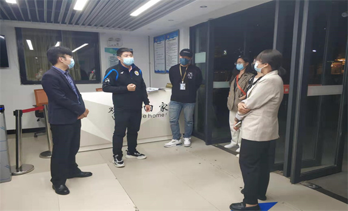

加强“三风”建设，创建平安校园
发布于：2022-05-01 21:51 编辑：西安工商学院

为进一步加强疫情防控工作教育和落实，强化“三风”建设，创建平安校园，落实安全稳定责任，4月30日21时，校长助理程波带队巡视校园，深入学生公寓检查在校生疫情防控落实情况。
通过巡视检查，了解在校生是否熟知“五一假期放假通知”、“返校须知”和《西安工商学院疫情防控期间学生管理规定（试行）》等学校重要的疫情防控措施和要求；嘱咐学生们日常佩戴好口罩、宿舍勤通风、勤洗手，保持社交距离，这些规定动作对于疫情防控具有重要意义。
5月7日，中国足协女子足球超级联赛第八轮在海口进行，在江苏无锡女足对阵陕西长安竞技女足的比赛中，陕西女足球员王芦荟在受伤后被队医抱下场，引发舆论对女超安全保障的疑问。
赛后，陕西长安竞技女足发文澄清了当时情况：当场比赛有担架和担架医疗人员在内的全部比赛需要的医疗设施和人员。当值主裁也询问了是否需要担架进场。但在经过检查队员伤情没有大碍的情况下，队医和队员决定不用担架进场，而是直接将受伤球员抱离场地，球队进而完成换人调整。